Depuis certains écrans de Lotus Notes, l’utilisateur peut cliquer sur des boutons ou sélectionner des choix du menu faisant appel à Divalto (générer un événement, afficher la fiche Tiers, ajouter des destinataires, saisir le code utilisateur Divalto, effacer la marque « Evénement déjà généré »).
Ceci nécessite de modifier les masques standard de Lotus Notes pour leur ajouter ces boutons. A cet effet, un modèle est livré dans le fichier Divalto_BoutonsCRM.ntf (Cf. rubrique précédente) :
DivaltoAppendAdrMemo : Ajouter une adresse (masques de création ou de renvoi d'un mail).
DivaltoEffacerMarq : Effacement de la marque "Evénement déjà transmis" ("folders" et "vues").
DivaltoFicheTiersFolder : Afficher la fiche tiers ("folders" et "vues").
DivaltoFicheTiersMemo : Afficher la fiche tiers (masques).
DivaltoGenEventFolder : Générer un événement ("folders" et "vues").
DivaltoGenEventMemo : Générer un événement (masques).
DivaltoUtilDivalto : Saisie du code utilisateur Divalto (menus).
Les copies d'écran suivantes (en version anglaise) montrent comment insérer les boutons dans les masques Lotus. Après avoir lancé LotusNotes Designer et chargé la base du client :
Ouverture de la base Divalto_BoutonsCRM.ntf

Copie des boutons Divalto
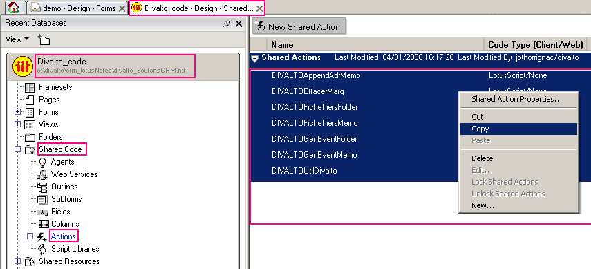
Coller des boutons Divalto dans la base "client"
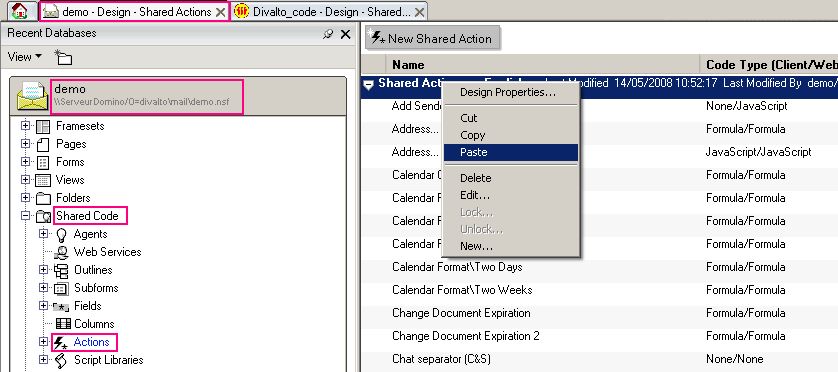
==>
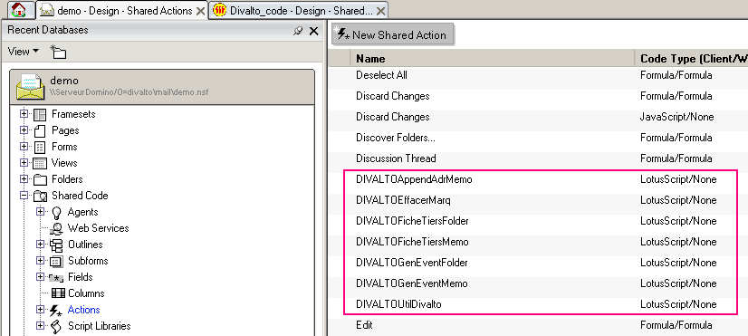
Ajout des boutons dans le "folder" $Inbox
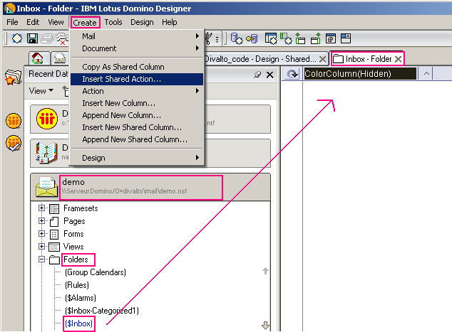
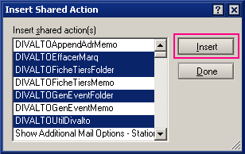
==>
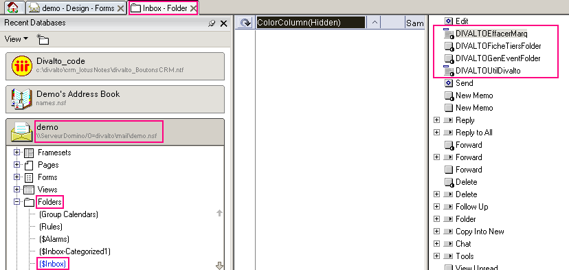
Remarque : Si le volet de droite n'apparaît pas :
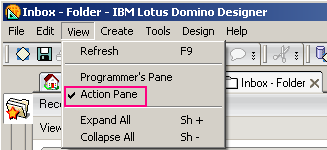
Paramétrage d'un bouton (exemple de DivaltoFicheTiersFolder)
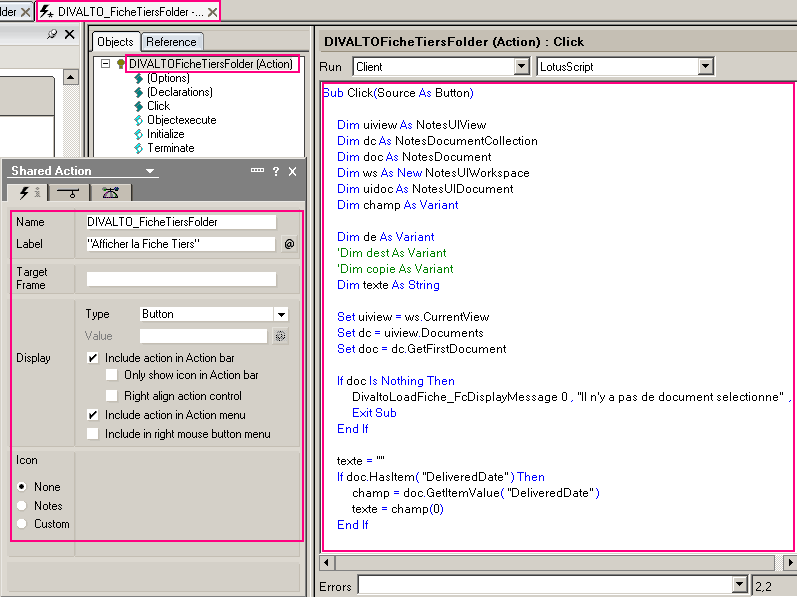
A gauche : paramètres de présentation du bouton (libellé, placement dans la barre d'outils et/ou le menu, etc.).
Notez par exemple que dans le modèle livré du bouton Divalto_UtilDivalto, la case "Include action in Action bar" est décochée afin de mettre cette action uniquement dans le menu.
A droite : script qui sera exécuté si le bouton est activé.
Désactiver le bouton pour les utilisateurs "non Divalto"
Pour ce faire, créez un rôle de nom "Divalto" et cochez la case "Hide action if formula is true" :
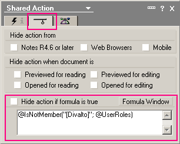
Ajout des boutons dans la vue $Sent
Dans cette vue, ajoutez les mêmes boutons que précédemment :
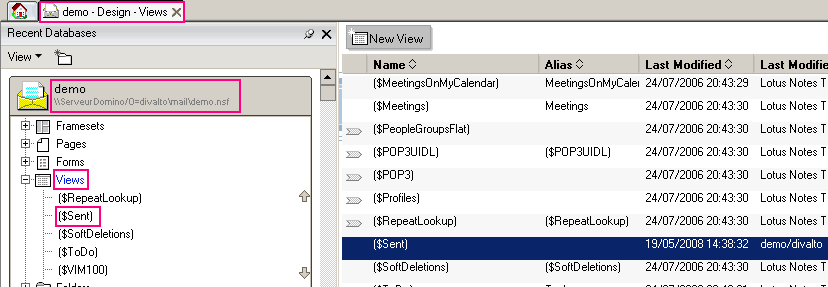
Ajout des boutons dans le masque "Memo"
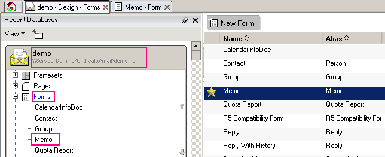
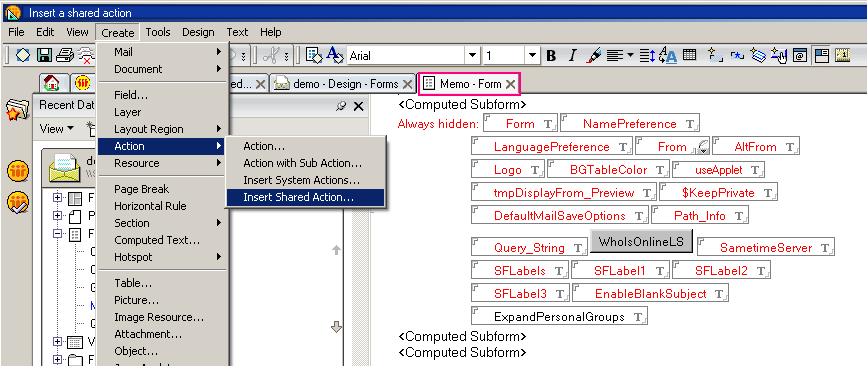
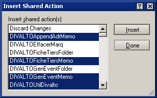
Paramétrage du bouton DivaltoAppendAdrMemo
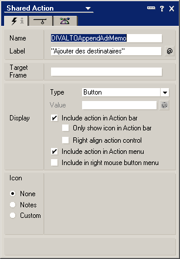
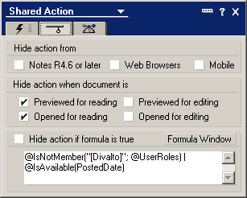
Notez ici que l'ajout d'une adresse n'est valide que lors de la création du mail. Il faut donc cocher les cases "Previewed for reading" et "Opened for reading".
Il est également souhaitable de cocher la case "Hide action if formula is true", au moins avec la formule @IsAvailable(PostedDate), pour que le bouton ne s'affiche pas si c'est un mail déjà envoyé (car il n'est pas possible d'ajouter des adresses à un mail déjà créé).
Ajout des boutons dans les masques "Reply" et "Reply with"
Vous pouvez aussi ajouter le bouton DivaltoAppendAdrMemo dans les masques Renvoi et Renvoi avec historique :
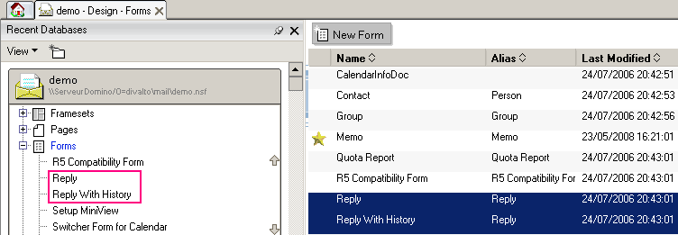
N'oubliez pas de sauver les objets modifiés.
Ce que vous devriez ensuite voir dans LotusNotes au lancement
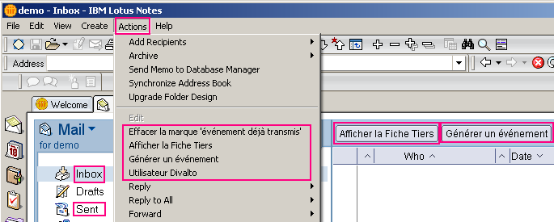
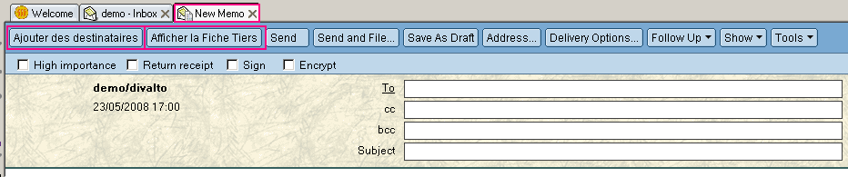